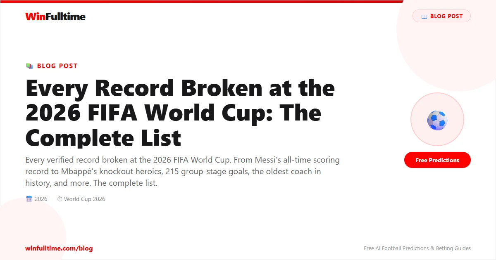

The 2026 FIFA World Cup has not just been the biggest tournament in football history — it has been the most record-breaking. From the moment the expanded 48-team format kicked off across the United States, Canada, and Mexico on June 11, the record books have been rewritten week after week. Players, coaches, goalkeepers, and even entire nations have etched their names into history in ways nobody predicted.
With the knockout stages well underway and the tournament heading toward its July 19 final at MetLife Stadium in New Jersey, we have compiled every verified record broken so far. This is the definitive list.
Before a single match was played, the 2026 World Cup had already broken every structural record in FIFA's history. The expansion from 32 to 48 teams was not a incremental change — it fundamentally altered the scale of the event.
48 teams, 104 matches, and a duration of 39 days (June 11 to July 19). The previous record was 32 teams, 64 matches, and 32 days. Every metric — teams, matches, duration — is the largest FIFA has ever staged.
The United States, Canada, and Mexico share hosting duties — the first time three sovereign nations have jointly hosted the tournament. Sixteen host cities across the three countries are staging matches.
$727 million in total prize money. The winning federation takes home $50 million, and every participating country is guaranteed at least $10.5 million simply for qualifying.
FIFA staged three separate opening ceremonies — one in each host country — within a 48-hour window. This has never happened before. Each ceremony featured world-renowned artists including Shakira, Burna Boy, Katy Perry, and Michael Bublé.
Mexico City's Estadio Azteca became the first stadium in history to host matches at three separate FIFA World Cups — 1970, 1986, and 2026. The iconic venue hosted five matches in this tournament.
A record 1,248 players across 48 squads. Of those, 894 were appearing at a World Cup for the first time, while 354 had prior tournament experience.
The group stage alone produced enough records to fill a separate article. The combination of expanded squads, more matches, and attacking football created the most prolific group phase in World Cup history.
An average of three goals per match across 72 group-stage games. This smashed the previous record of 172 goals set at the 2022 World Cup in Qatar. Only Panama failed to score among the 48 nations.
The previous all-time attendance record was 3.5 million, set at the 1994 World Cup in the USA. The 2026 group stage surpassed that by over a million spectators, filling 99.7% of available seats with an average crowd of 64,508 per match.
426,834 spectators attended matches on June 25 — the highest single-day attendance in World Cup history. Fans from 210 countries and territories attended the group stage.
Japan's 4-0 victory over Tunisia was the 1,000th match in the history of the men's FIFA World Cup. It was also the biggest victory ever by an AFC nation at the tournament.
Curaçao, Cabo Verde, Jordan, and Uzbekistan all played their first-ever World Cup matches. The number of debut nations at a single tournament is itself a new record. Cabo Verde were the only debutant to qualify for the knockout stage.
Never before had more than two African nations reached the knockout rounds of a World Cup. In 2026, nine CAF teams advanced — shattering the previous best of two (set in both 2014 and 2022).
Bosnia and Herzegovina, Cabo Verde, Canada, DR Congo, Côte d’Ivoire, Egypt, and South Africa all qualified for the knockout rounds for the first time in their histories.
At 38, Lionel Messi arrived at his sixth World Cup as the defending champion. He left the group stage as the most decorated player in the tournament's history — by virtually every measurable standard.
Messi surpassed Miroslav Klose's long-standing record of 16 goals to become the joint-all-time leading scorer in FIFA World Cup history. His tally of 20 includes a hat-trick against Algeria in the opening match — making him the oldest player to score a World Cup hat-trick at 38 years and 357 days, surpassing Ronaldo's record of 33 years and 130 days from 2018. He now shares the all-time scoring record with Kylian Mbappé, who also has 20 goals.
No player in history had scored in more than five consecutive World Cup matches before Messi. He broke through that ceiling and extended the run to seven — a sequence spanning multiple tournament editions.
Messi now holds the record for the most FIFA World Cup final tournament appearances, surpassing the previous mark. Across six editions (2006-2026), he has played more World Cup matches than any other player.
Messi has won more World Cup matches than any other player in history, surpassing Miroslav Klose's record of 17 victories. His 19 wins span from his debut in 2006 to the current tournament.
With 19 goals and 8 assists, Messi has recorded 27 direct goal involvements at the World Cup — surpassing Pelé's previous record of 21. He also holds the record for most minutes played at the World Cup with 2,490.
Alongside his milestones, Messi set an unwanted record after missing his third World Cup penalty against Austria — the highest total by any player in the competition's history. Even legends are not immune to the pressure from the spot.
At 27, Kylian Mbappé has already accumulated more World Cup knockout-stage goals than any player in history. His 2026 tournament has been a masterclass in big-game performance, cementing his status as the most lethal tournament striker of his generation.
Mbappé surpassed Just Fontaine's record of 13 goals to become France's all-time leading World Cup scorer. With 20 goals across three tournaments, he is now the joint-all-time leading scorer in FIFA World Cup history alongside Lionel Messi — and he is only 27 years old.
Mbappé has scored 12 goals in knockout-stage matches — more than any other player in World Cup history. He moved ahead of Brazilian legends Ronaldo Nazário and Leônidas, who previously held the joint record.
At 27 years and 201 days, Mbappé became the youngest player to reach 20 World Cup appearances, breaking the record held by Poland's Władysław Żmuda (28 years, 34 days). He also equalled Hugo Lloris' record for most World Cup appearances for France (20).
Mbappé recorded 10 goal contributions at the 2022 World Cup and surpassed that total in 2026 — making him the first player in history to register 11 or more direct goal involvements in two separate World Cup tournaments.
Mbappé surpassed Olivier Giroud's record of 57 goals to become France's all-time leading scorer in international football. At 27, he has years ahead to extend a record that already stands alone in French football history.
Reaching 20 World Cup goals in just three tournaments (2018, 2022, 2026), Mbappé reached the milestone faster than any other player. He was 27 when he hit the mark — Miroslav Klose was 32, and Lionel Messi was 35 when they reached comparable tallies.
At 41, Cristiano Ronaldo became the oldest player to feature at a World Cup since the tournament's inception. And while his team's journey drew to a close, his individual milestones remain unprecedented.
Ronaldo's goal against Uzbekistan made him the first player in history to score at six separate FIFA World Cups — spanning from 2006 to 2026. No other player has scored in more than five editions.
Ronaldo surpassed Eusébio's long-standing record of 9 goals to become Portugal's highest scorer in World Cup history. His 10 goals came across six tournaments — a body of work unmatched in Portuguese football.
Ronaldo, Messi, and Mexico goalkeeper Guillermo Ochoa are the only three players to be selected for six FIFA World Cup tournaments. Ronaldo and Messi both featured in matches; Ochoa was included in squads in 2006 and 2010 without playing.
Kane surpassed Gary Lineker's record of 10 goals to become England's highest scorer in World Cup history. Five of his 11 goals have come from the penalty spot — the most penalties scored by any player at a single World Cup era.
The 2026 World Cup produced several remarkable goalkeeping records, from consecutive clean-sheet minutes to a historic workload for Cape Verde's number one.
Spain's Unai Simón set a new Guinness World Record by keeping a clean sheet for 519 consecutive World Cup minutes, breaking Walter Zenga's mark of 518 minutes set at the 1990 World Cup in Italy. The record stood for 36 years before Simón surpassed it.
Curaçao's Eloy Room made 15 saves against Ecuador — the most by any goalkeeper in a 90-minute World Cup match since records began. Only Tim Howard's 16 saves for the USA against Belgium in 2014 (which went to extra time) exceeds that total.
Cabo Verde's Vozinha became the third goalkeeper aged over 40 to record multiple World Cup clean sheets, joining Peter Shilton and Dino Zoff. At 40 years and 12 days, he also became the oldest player to feature in his nation's first World Cup match.
Uruguay's Fernando Muslera became the first goalkeeper to commit three errors directly leading to goals during a single World Cup campaign — an unwanted record that contributed to Uruguay's group-stage exit.
Curaçao's Dick Advocaat set a new record as the oldest coach to take charge of a World Cup match at 78 years and 271 days, surpassing Germany's Otto Rehhagel who coached Greece in 2010 at 71.
South Africa's Hugo Broos became the oldest manager to win a World Cup match at 74 years and 75 days after leading his country to a historic victory over South Korea. This surpassed Carlos Queiroz, who was 73 years and 108 days old when he led Ghana to beat Panama earlier in the tournament.
France's Didier Deschamps accumulated 17 World Cup victories as a manager — the most by any coach in the tournament's history. He also equalled the record for managing the same national team at four consecutive World Cups, matching Walter Winterbottom and Helmut Schön.
Iran's Carlos Queiroz equalled Bora Milutinovié's record by coaching at five consecutive FIFA World Cups — a feat of longevity in international management that very few coaches have approached.
Canada's dominant 6-0 victory over Qatar was the first time a CONCACAF nation had scored more than four goals in a FIFA World Cup match. It was also Canada's first-ever World Cup victory.
Mexico won four successive FIFA World Cup fixtures for the first time — extending their record as the first CONCACAF team to achieve the feat.
Senegal's 5-0 victory over Iraq made them the first African nation to score five goals in a single World Cup match. They also set a new African record with eight goals during the group stage.
The United States scored four goals in a World Cup match for the first time in their 4-1 victory over Paraguay — a statement result for the co-hosts on home soil.
England recorded 78.8% possession against Ghana in a 0-0 draw — the highest possession figure on record for a team that failed to score in a World Cup match. Dominance without end product written into the history books.
With a population of approximately 500,000, Cabo Verde became the smallest nation ever to reach the knockout rounds of a FIFA World Cup. They were also the first country since Chile in 1998 to progress from the group stage with three draws.
With a population of under 150,000, Curaçao became the smallest nation by population to play at a World Cup, breaking the previous record held by Iceland. Livano Comenencia then scored their first-ever World Cup goal against Germany, making Curaçao the smallest nation to score at the tournament.
Morocco's Ismael Saibari became the first African player to score in three consecutive FIFA World Cup matches — a streak that highlighted Morocco's continued rise as a global football power after their historic 2022 semi-final run.
Senegal's Iliman Ndiaye became the first player in World Cup history to come off the bench and, in the same match, score, provide an assist, record five touches in the opposition penalty area, and complete five dribbles. He also became Senegal's outright leading World Cup scorer with four goals.
Belgium's Romelu Lukaku scored and provided an assist against New Zealand despite registering only five touches — becoming the first player on record to produce two goal involvements from so few touches in a World Cup match. Efficiency redefined.
Brian Brobbey (Netherlands) and Derrick Luckassen (Ghana) became the first pair of brothers to score for different nations at the same World Cup — a quirk of dual-nationality eligibility that produced a unique piece of football history.
At 40 years and 291 days, Croatia's Luka Modrié became the oldest player to record an assist at a FIFA World Cup after setting up Nikola Vlašié's goal against Ghana.
Jordan Henderson became the first England player to feature in four FIFA World Cups and seven major international tournaments after appearing against Panama.
Kevin Pina scored Cabo Verde's first-ever World Cup goal against Uruguay — a historic moment for a nation of 500,000 people competing at football's biggest stage for the very first time.
Beyond the headline records, the 2026 World Cup produced a wealth of statistical milestones that illustrate the scale and competitiveness of the expanded format.
With the quarter-finals and semi-finals completing and the final scheduled for July 19 at MetLife Stadium, several records remain within reach:
The 2026 World Cup has produced more upsets, goals, and dramatic moments than any previous edition. If you are looking to place informed bets on the semi-finals and final, check our free daily football predictions powered by AI analysis. Our Ticket Builder can also help you build optimized accumulator combinations from the remaining tournament matches.
Get free football predictions for every remaining match of the tournament. Data-driven picks, updated daily.
Generate optimized accumulator combinations from today's AI-powered predictions. Set your target odds and get instant ticket suggestions.
Free Ticket Builder →